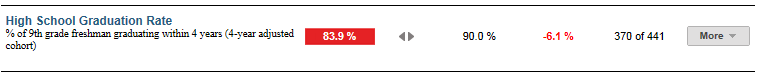

Dashboard Metrics


High School Graduation Rate
Background
District Dashboard Metrics
As the ultimate goal of high school campuses is to graduate students ready for college within four years, many states are including a graduation rate metric into their dashboards. In addition, during focus groups conducted with educators, the High School Graduation Rate metric was considered useful by 97% of those surveyed.
Primary Metric
- High School Graduation Rate: percentage of students graduating within four years of entering the ninth grade.
Related Metric
- High School Dropout Rate: percentage of students who have left the school and are not enrolled in another school.
User Interface
Dashboard Example
Figure 1 shows the High School Graduation Rate metric as seen on the district dashboard.

Figure 1 Ed-Fi High School Graduation Rate Metric
Status Definition
This metric displays the status of a group (cohort) of students after four years of high school.
The Status indicator is determined by district goals. The default is 90%.
Table 2 lists the Status indicators as seen on the district dashboard.
Metric Indicator | ||
Metric Name | Metric Indicator (a) | District Goal |
High School Graduation Rate | Red (Percentage) = if percent of cohort graduating is less than the district goal Green (Percentage) = if percent of cohort graduating within 4 years is equal to or greater than the district goal | District goal and the percentage of students in the cohort that graduate |
Trends Definition
The objective of the trend indicator is to increase the percent of students graduating within four years.
Trend Indicators for District High School Graduation Rate | |||
|---|---|---|---|
 | Up green | Percentage is higher compared to previous year; upward trend is favorable | |
 | Unchanged | +5 percentage points | |
 | Down red | Percentage is lower compared to previous year; flag indicates unfavorable trend | |
Delta Definition
The Delta column only appears in the campus list is the absolute value of the difference between the campus metric percentage and the campus goal percentage for each campus. If the campus percentage is below the goal, the delta percentage displays in red. If the campus percentage is equal to or above the goal, the delta percentage displays in black.
Periodicity
At a minimum, upload the data for this metric at least annually, prior to the beginning of the school year. Best practice is to upload monthly to capture students transferring throughout the year.
Recommended Load Characteristics | |
Calendar | Throughout the school year |
Frequency of data load | Monthly |
Latency | Yearly |
Interchange schema | Interchange-StudentEnrollment.xsd |
Tooltips
The standard tool tips for the metric definition, column headers, and help functions display for this metric.
The following are tooltips specific to the High School Graduation Rate metric:
- More indicates drill down to view ‘High School Graduation Rate by Grading Period’
- is ‘No change from the prior period'
- is ‘Getting worse from the prior period’
- is 'Getting better from the prior period'
Business Rules
Computed Values
| Cohort: Currently enrolled students at time of last upload |
| Cohort excludes: |
|
Metric Values |
Graduation Rate = Graduated / (Graduated + Continuers + Dropouts + Summer Dropout) |
Calculation Notes
Graduation rate = Graduated/(Graduated + Continuers + Dropouts + Summer Dropout)
Cohort = 9th grade cohort in the expected year of graduation who:
- Graduated (Leaver code 01) anytime over the last four years prior to Aug 31 of the current year
- Dropout (Leaver code 98) at any time over the last four years prior to Aug 31 of the current year (does not account for possible GED)
- Summer dropout (no show): of the prior 12th graders, completed prior year and not identified as a leaver, but is not enrolled in the next Fall school year (by the last Friday in September – Sept 30th could be practically used)
- Continuers (still enrolled in high school) – of the prior 12th graders, completed prior year and not identified as a leaver, but is enrolled in the next Fall school year (by the last Friday in September – Sept 30th could be practically used)
Note: Leavers other than graduates (01) or dropout (98) are excluded from the cohort
Implementation Considerations
Student Identity
Maintaining a correct and consistent student identity is at the center of any education data system. Most systems use some sort of unique identifier. However, sometimes this identifier is entered incorrectly or sometimes different systems use different identifiers.
The UDM XML supports the interchange of multiple types of identifiers. The StudentReference is a complex type within the UDM to maintain the referential integrity of the student (that is, ensuring that the data associated with each student is accurately associated with the right student). The complex type of the student reference assists with implementing the accurate matching algorithm to identify a student by utilizing any of the individual attributes (e.g., Student Unique State ID, Student ID, Campus Local ID (with Campus ID), Name and Birth Date). For example, if the Student Unique State ID is unknown, you can find the student’s identity by their Student ID, First Name, Last Name and Birth Date.
NCLB 4-year Graduation rate – alternative listed in background
High School Graduates, year 4 / [High School Graduates, year 4 + (Grade 9 Dropouts, year 1 + Grade 10 Dropouts, year 2 + Grade 11 Dropouts, year 3 + Grade 12 Dropouts, year 4)]
Similar to longitudinal graduation rate above, but different.
Averaged freshman graduation rate – alternative listed in background
Number of high school students who graduate with a regular high school diploma in a given school year / the average of three enrollments: Grade 8 enrollment five years earlier, Grade 9 enrollment four years earlier, and Grade 10 enrollment three years earlier.
Note: Enrollments per Fall snapshot date
Mobility
A student is considered to be mobile if he or she has been in membership at the school for less than 83% of the school year (i.e., has missed six or more weeks at a particular school).
Number of mobile students in 2007-2008 / Number of students who were in membership at any time during the 2007-2008 school year
This rate is calculated at the campus level. The mobility rate shown in the Profile section of campus reports under the "district" column is based on the count of mobile students identified at the campus level. That is, the district mobility rate reflects school-to-school mobility, within the same district or from outside the district.
Aggregate Metric Inclusions and Exclusions of Special Education Students
Each campus's aggregate metrics may include or exclude the special education population, depending on the intended purpose for a specific metric and campus goal. This could affect the district metric.
Drill Downs
Drill Down Views
The dashboards include the option to drill down and see more detail that is associated with a metric. Table 7 lists the drill down views that are recommended for this metric.
Campus List | List of campuses and whether or not they meet their goal for this metric for the specified period. |